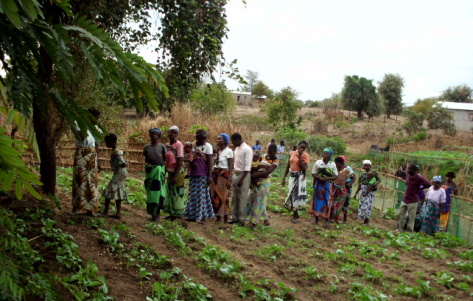
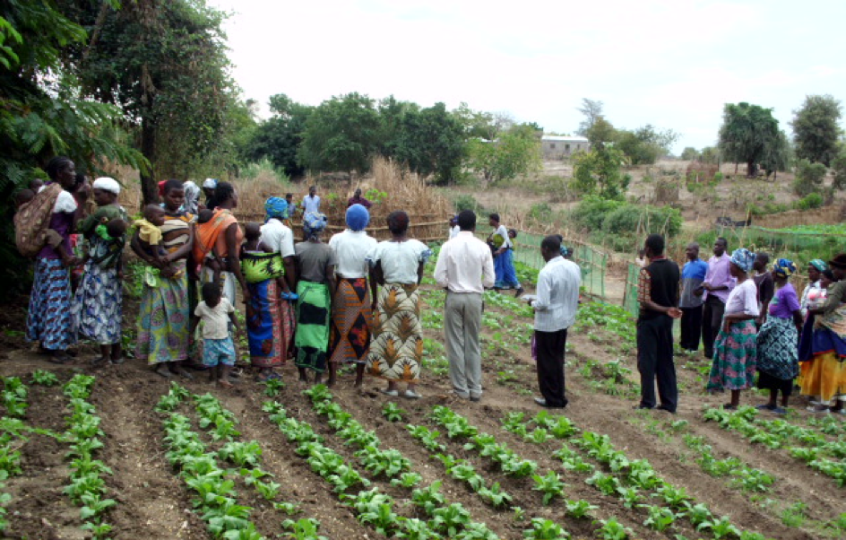
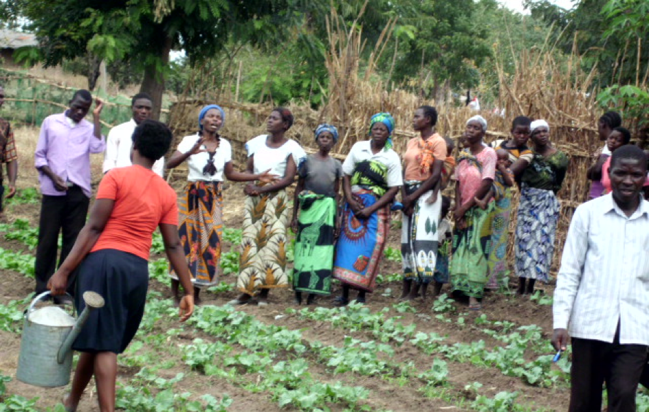
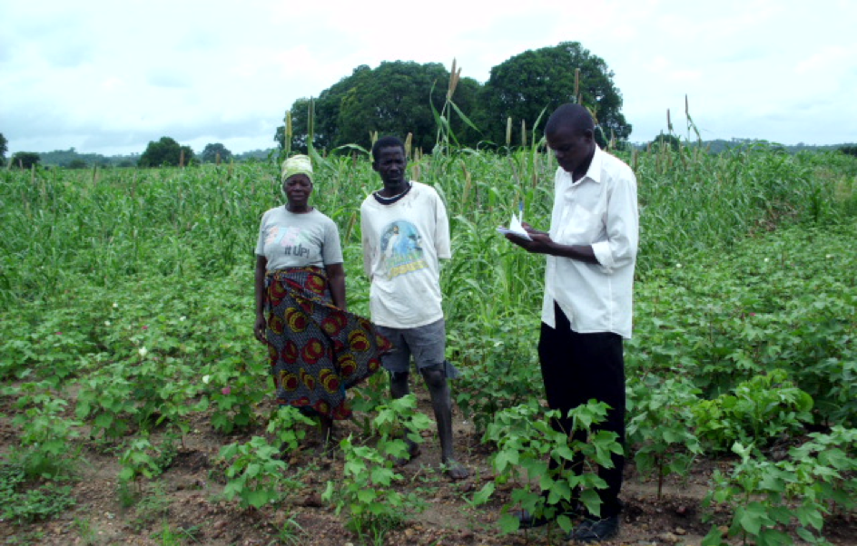
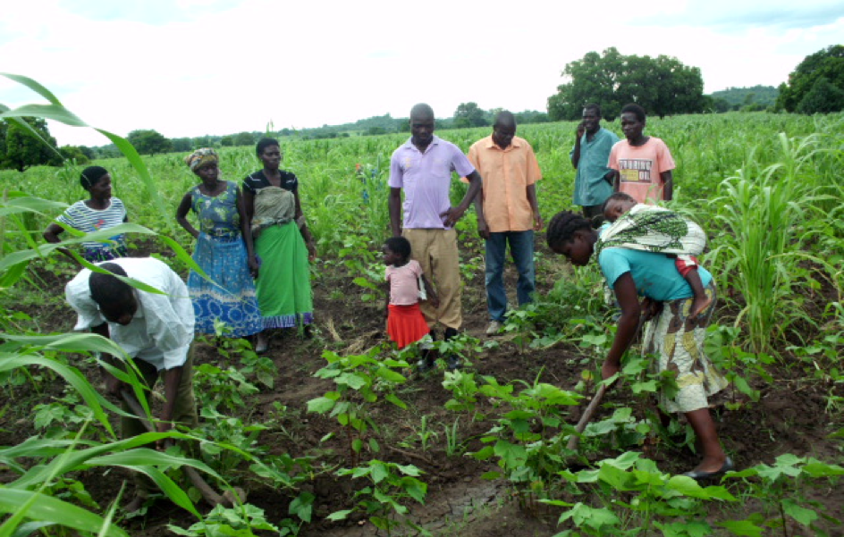
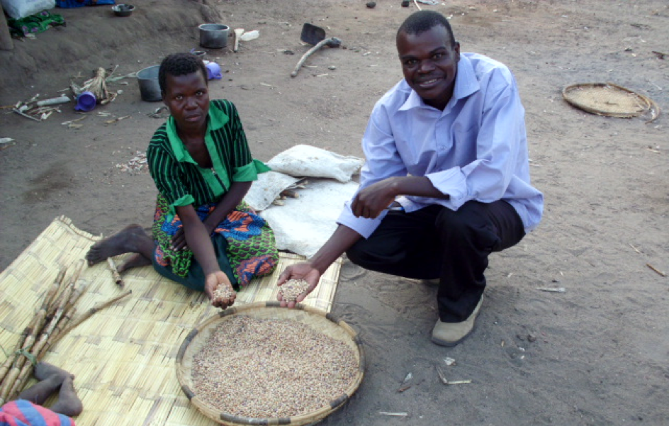
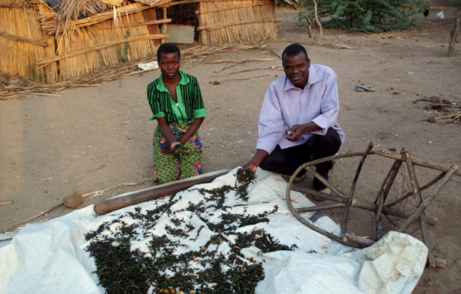
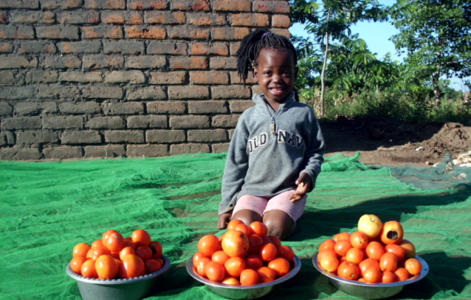

Ein weiterer sehr wichtiger Punkt für das Projekt ist das übermitteln von Wissen im Bereich Landwirtschaft. Das Projekt organisiert regelmässig Treffen, bei denen wichtige Techniken, Methoden und weiteres wissenswertes über den Anbau von Lebensmitteln vermittelt und praktisch gezeigt wird. Zudem besucht Josephy regelmässig die Bewohner zu Hause und bei ihren Feldern, um sich die Lage anzusehen und wichtige Tipps weiterzugeben, welche ihnen helfen den Anbau zu optimieren.
|  |  |  |
|  |  |  |
|  |  |